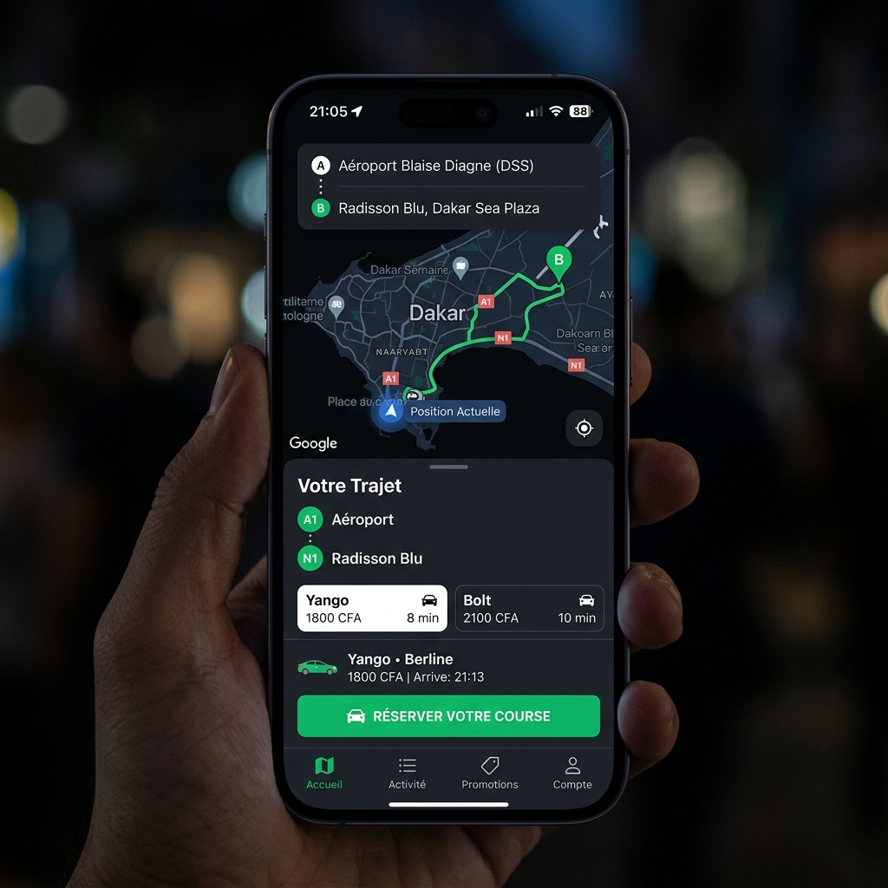
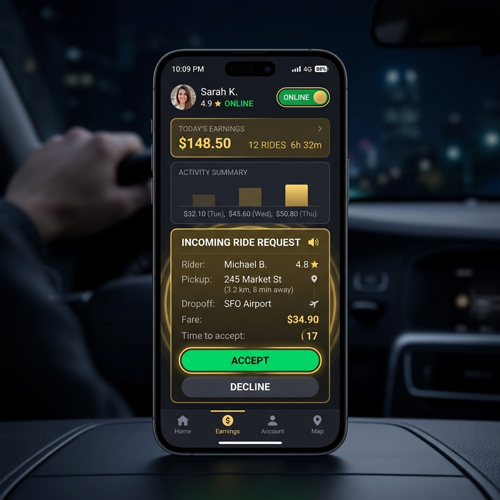
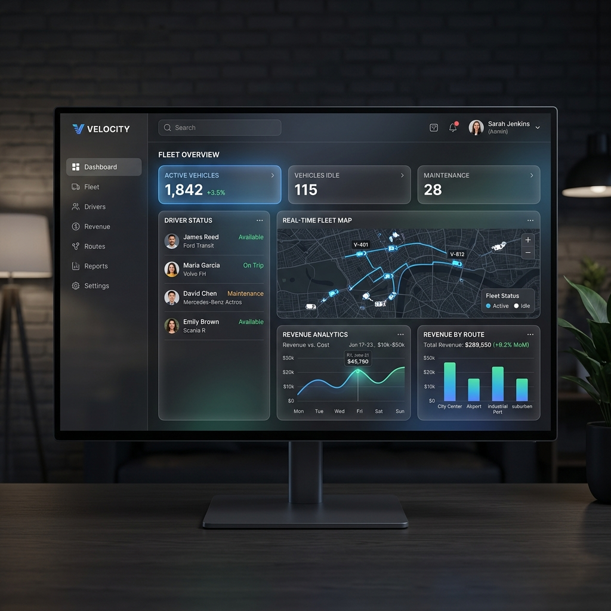

Plus qu'une application, TranSen est l'infrastructure numérique nationale qui connecte les chauffeurs indépendants, les grandes flottes et les clients exigeants. L'application TranSen permet de révolutionner votre mobilité urbaine et interurbaine. Les partenaires de l'infrastructure TranSen garantissent un service fiable et de qualité supérieure à travers tout le pays.
Une plateforme unifiée qui orchestre les trois piliers du transport sénégalais pour créer une synergie parfaite.
Accédez à un réseau de chauffeurs certifiés, avec des prix transparents et une sécurité maximale à chaque trajet.
Gérez vos courses, augmentez vos revenus et profitez d'une flexibilité totale sans dépendre d'une flotte.
Digitalisez votre flotte. Suivez vos chauffeurs en temps réel et gérez vos revenus via notre tableau de bord B2B.
Une architecture unique au monde mariant l'indépendance individuelle, la gestion de flotte d'entreprise et la mutualisation publique.
Destiné aux chauffeurs individuels autonomes. Ils reçoivent directement les demandes de trajet des clients via leur application mobile **TranSen Chauffeur**, fixent librement leurs disponibilités, et profitent de gains maximisés grâce au modèle de commission technique de 1%.
Dédié aux compagnies de transport structurées et agences de livraison. Le gestionnaire utilise le portail web dédié **compagnie.transen.org** pour enregistrer et valider ses véhicules/chauffeurs, suivre sa flotte en temps réel par GPS, et analyser la comptabilité.
La force motrice de l'écosystème. Si une course de client n'est pas réclamée par le transporteur choisi dans le temps imparti, ou en cas de surcharge d'une compagnie partenaire, la demande bascule sur la bourse pour être partagée équitablement avec l'ensemble des chauffeurs certifiés.
Le client réserve un trajet (VTC, moto, interurbain) ou une livraison de colis depuis son application mobile.
L'algorithme route la course en priorité vers le transporteur désigné (Chauffeur indépendant ou Compagnie choisie).
Si non acceptée immédiatement, elle déborde dans la **Bourse Publique** pour être pourvue par n'importe quel chauffeur à proximité.
Commandez une course en quelques clics. TranSen vous connecte instantanément aux meilleurs chauffeurs VTC et flottes privées de votre ville.

Pour les chauffeurs indépendants (Allo Dakar), TranSen est le partenaire idéal. Nous vous apportons les clients, vous gardez le contrôle de votre temps.

TranSen offre une véritable infrastructure technologique pour les entreprises de transport. Prenez le contrôle total de vos opérations avec notre Dashboard analytique complet.

Pour la toute première fois au Sénégal, brisez la dépendance aux commissions exorbitantes des multinationales. TranSen applique un tarif technique juste pour faire prospérer l'économie locale.
Les géants mondiaux ponctionnent près d'un cinquième du prix payé par le client pour rémunérer des intermédiaires étrangers, pénalisant directement le revenu net du chauffeur sénégalais et augmentant le coût des courses pour les passagers.
TranSen est une infrastructure souveraine. Notre mission est de numériser le transport sans en siphonner la valeur. Nous appliquons un prélèvement unique et minimal de 1% pour assurer l'hébergement, la sécurité et la maintenance technique. 99% de la richesse créée reste au Sénégal dans les mains de ceux qui conduisent.
Notre infrastructure numérique est conçue pour couvrir l'intégralité du territoire national, de Dakar à Ziguinchor, en passant par Saint-Louis et Tambacounda. TranSen connecte tous les départements pour fluidifier le transport interurbain.
Tout ce que vous devez savoir sur le fonctionnement de TranSen.
Tous les paiements sont sécurisés et gérés via l'application avec Wave et Orange Money pour éviter la manipulation d'espèces.
Oui, chaque chauffeur (qu'il soit indépendant ou rattaché à une compagnie) passe par un contrôle d'identité et de véhicule strict.
Notre équipe de support technique est disponible 24/7. Vous pouvez nous écrire à contact@transen.org.
Remplissez le formulaire ci-dessous pour être recontacté par notre équipe.